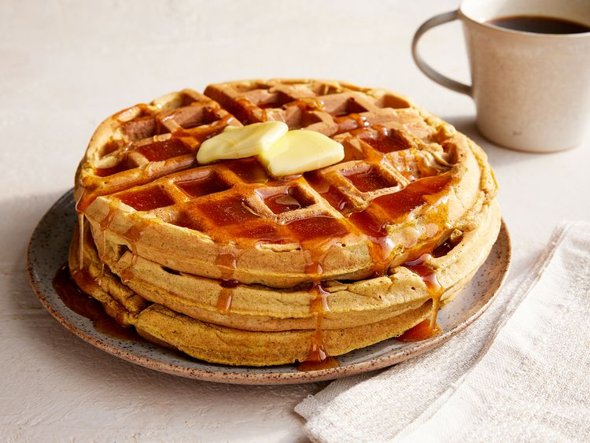

Pumpkin Waffles with Apple Cider Syrup

Description
A fall, winter and special occasion family favorite, these are fairly easy to make and delicious! They're sure to please even picky eaters.
Ingredients
- 2 1/2 cups all-purpose flour
- 4 teaspoons baking powder
- 2 teaspoons ground cinnamon
- 1 teaspoon ground allspice
- 1 teaspoon ground ginger
- 1/2 teaspoon salt
- 1/4 cup packed brown sugar
- 1 cup canned pumpkin
- 2 cups milk
- 4 eggs, separated
- 1/4 cup butter, melted
Apple Cyder Syrup
- 1/2 cup white sugar
- 1 tablespoon cornstarch
- 1 teaspoon ground cinnamon
- 1 cup apple cider
- 1 tablespoon lemon juice
- 2 tablespoons butter
Steps
- Preheat a waffle iron according to manufacturer's instructions.
- Combine the flour, baking powder, cinnamon, allspice, ginger, salt, and brown sugar in a mixing bowl.
- Stir the flour mixture and 1/4 cup melted butter to the pumpkin mixture, stirring just to combine.
- To make the syrup, stir together the sugar, cornstarch, and cinnamon in a saucepan.